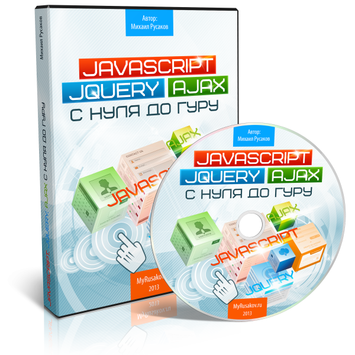
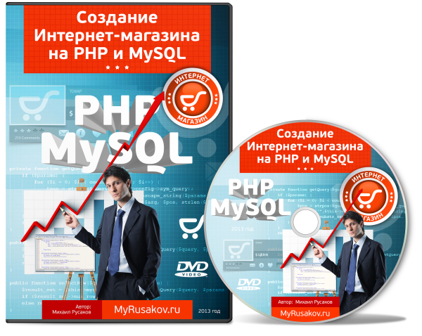
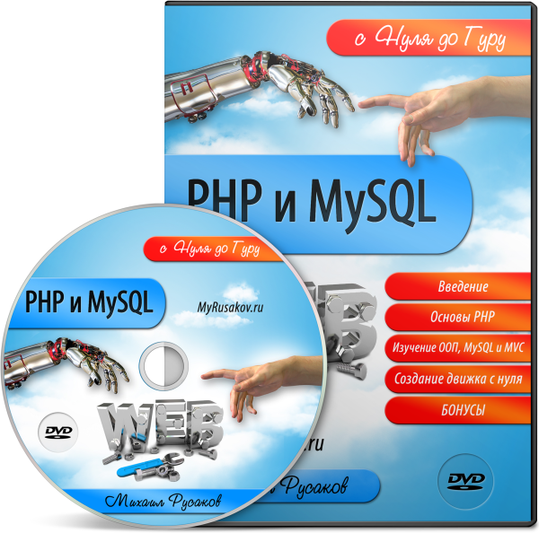
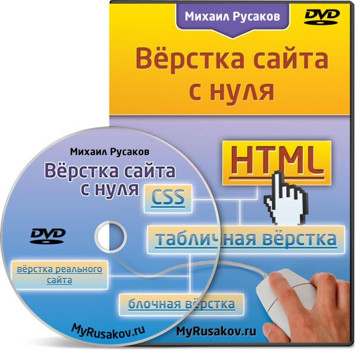
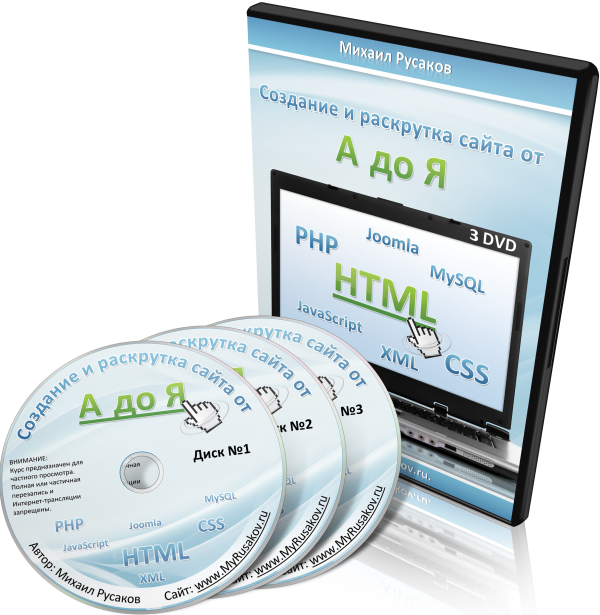

Этот курс идеально дополняют следующие товары:
1. Видеокурс "HTML5 и CSS3 с Нуля до Гуру"

Видеокурс "HTML5 и CSS3 с Нуля до Гуру" научит Вас создавать сайты с использованием HTML5 и CSS3. Из курса Вы узнаете, что нового появилось в этих Web-технологиях с разбором множества примеров.
И, самое главное, целый раздел посвящён вёрстке главной страницы MyRusakov.ru именно с помощью HTML5 и CSS3. Таким образом, Вы увидите, как верстается реальная страница.
И, наконец, Вы узнаете, как адаптировать сайт под мобильные устройства: смартфоны, планшеты и просто мобильные телефоны. Всё это так же на примере главной страницы MyRusakov.ru.
2. Видеокурс "JavaScript, jQuery и Ajax с Нуля до Гуру"
Видеокурс "JavaScript, jQuery и Ajax с Нуля до Гуру" научит Вас "вдыхать жизнь" в страницы, делая их с потрясающими эффектами и максимальным удобством для пользователя.
Курс научит Вас писать скрипты на JavaScript, а также обучит использованию библиотеки jQuery и технологии Ajax.
Практически любой красивый сайт (с красивыми галереями изображений, слайдерами, плавными переходами и так далее) использует jQuery. А практически на любом серьёзном сайте вовсю используется технология Ajax, которая делает работу с сайтом максимальной удобной.
Поэтому курс "JavaScript, jQuery и Ajax с Нуля до Гуру" Вам просто необходим, если Вы хотите создавать по-настоящему достойные сайты.
3. Видеокурс "Создание Интернет-магазина на PHP и MySQL"
Видеокурс "Создание Интернет-магазина на PHP и MySQL" – это уникальный курс по созданию Интернет-магазина с нуля. Особенностью данного курса является то, что создание идёт с самого начала, то есть от идеи. Далее создаётся дизайн всех необходимых страниц, после делается их вёрстка. Затем создаётся движок на PHP и MySQL, после делается Admin-панель и, наконец, готовый сайт размещается в Интернете.
Адрес созданного в этом курсе сайта: http://storedvd.ru
Всё создание сайта будет происходить на Ваших глазах, поэтому Вы легко сможете повторить весь процесс создания сложного функционального сайта уже при разработке своего портала.
4. Видеокурс "PHP и MySQL с Нуля до Гуру"
Видеокурс "PHP и MySQL с Нуля до Гуру" – это более 20-ти часов видеоуроков по изучению PHP и MySQL с точки зрения создания сайтов.
Ключевой момент курса – это создание движка для сайта с нуля. Никакого готового кода, никаких готовых скриптов, а только всё с нуля и прямо на Ваших глазах. Каждая строчка комментируется. Но, главное, я рассказываю о своём подходе при создании движков. Этот подход универсален и оптимален для сайтов любой функциональности: будь то социальная сеть или будь то поисковая система. Данный подход является лишь моими многолетними наработками, и именно с его помощью я создаю абсолютно все свои сайты. Я нигде и никогда не публиковал его, и он достанется только Вам уже готовеньким и отполированным.
Поскольку программирование – это прежде всего практика, то я практически для каждого урока сделал упражнения. Причём данные упражнения направлены не только на закрепление материала, но и на реализацию реальных задач, встающих перед Web-разработчиками при создании сайтов.
Исходя из вышесказанного, просмотрев курс и выполнив упражнения, Вы сможете без проблем создавать функциональные движки для самых различных сайтов.
5. Видеокурс "Вёрстка сайта с нуля"
Видеокурс "Вёрстка сайта с нуля" - это уникальная информация по созданию страниц любой сложности.
Пройдя данный курс, Вы сможете не только верстать страницы с любым по сложности дизайном, но и выводить на чистую воду недобросовестных верстальщиков, которых в Рунете около 95% (!!!). Поэтому данную информацию надо знать всем: кто создаёт сам и кто заказывает их на стороне.
Также вёрстка страниц - это очень прибыльное дело. Заработок верстальщиков составляет от 100 рублей в час у новичков до 1500 рублей в час уже у профи, которым Вы станете после просмотра курса и практики.
Также в Видеокурсе "Вёрстка сайта с нуля" рассказывается о том, как искать заказчиков, где их искать, как им писать в первый раз. Всё это я подробно рассказываю в курсе, а также даю уже готовый вариант первого обращения к заказчику. С таким обращением вероятность того, что заказчик к Вам обратится, близка к 100%. А учитывая, что Вы будете профессионалом, то этот заказчик превратится в постоянного!
Весь курс соткан из практических примеров реальной вёрстки. А также почти к каждому уроку идут упражнения для закрепления материала, поэтому в отличном результате можете быть уверены!
6. Видеокурс "Создание и Раскрутка сайта от А до Я"
Видеокурс "Создание и Раскрутка сайта от А до Я" – это 246 видеоуроков общей продолжительностью более 50-ти часов по теме создания, размещения в Интернете и раскрутке сайта.
В уроке рассмотрены следующие необходимые любому профессиональному Web-мастеру языки: HTML, CSS, JavaScript, PHP, SQL (с использованием MySQL) и XML.
Помимо этого в Видеокурсе рассматривается самая популярная система управления контентом – Joomla.
Также в Видеокурсе "Создание и Раскрутка сайта от А до Я" показывается весь процесс создания реального сайта – MyRusakov.ru. Затем демонстрируется его размещение в Интернете, а также последующая раскрутка. Всё это записывается, и Вам остаётся лишь просто повторить, чтобы стать владельцем своего собственного сайта!
И, наконец, почти к каждому уроку идут упражнения, которые позволяют закрепить полученные знания из урока уже на практике.